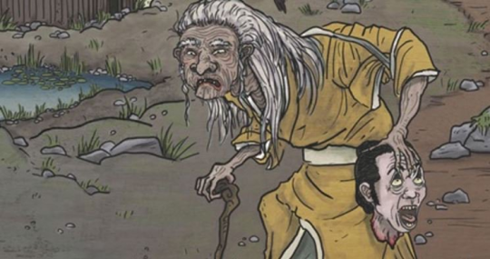

La Yama-Uba est un monstre de la mythologie japonaise. On le nomme parfois Yamamba ou encore Yamanba. Yama-Uba ressemble à une vieille femme relativement hideuse. Ses cheveux sont longs, en bataille et blancs et sa peau est noire comme le charbon. Elle porte le plus souvent un kimono rouge en lambeaux. Sa bouche est aussi large que sa tête et dans certaines descriptions, la créature aurait même une deuxième bouche au sommet de sa tête. Yama-Uba est capable de changer d'apparence. Elle use d'ailleurs de cette tactique pour capturer ses victimes. Yama-Uba habite dans les forêts profondes des montagnes du Japon. Plusieurs régions revendiquent être le lieu de sa naissance (Sabana, le nord de Honshu et les montagnes Ashigara). Quelques légendes disent que Yama-Uba vit dans une hutte. Les victimes de Yama-Uba sont les voyageurs qui se perdent dans les bois. Pour les attirer, elle se transforme soit en magnifique jeune femme soit en une vieille femme qui dit pouvoir aider le voyageur. Une fois qu'elle a gagné leur confiance, elle les mange. Elle est aussi capable de mettre ses cheveux en mouvement ou bien de les transformer en serpent (selon les légendes). On utilise Yama-Uba pour faire peur aux petits enfants afin qu'ils ne s'éloignent pas. Yama-Uba n'est pas toujours cruelle, ainsi elle a aidé le héros du folklore japonais Kintarō.
Voici l'histoire de la Yama-Uba :
Mythe original :
Interprétation dans la pop culture :
Lippoutou est un pokémon inspiré de la Yama-Uba. Elle a fait polémique au Etats-Unis du fait de sa peaux noirs et de ses grosses lèvres cependant son type Glace Psy ainsi que sa description dans le pokedex : "Ce Pokémon attaque en lançant des orbes bizarres et se protège avec une barrière psychique.". Cet incident montre le manque de culture ainsi que l'ethnocentrisme des américains.